Container Storage
Prerequisite
- Complete Deploy application to openshift with s2i
- Go to your project (same as your username)
- Open Web Terminal by click '>_' on top of OpenShift Web Console
- use web terminal to run command line
Test Create File in Container
- From Topology view, click Duke icon (backend deployment), in backend deployment view, select Resources Tab 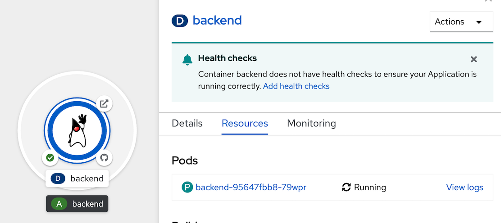
- Click link of pod name in Pods section 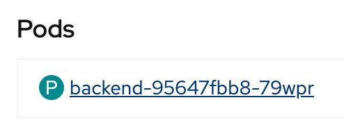
- in Pod Details, select Terminal Tab to enable Terminal to container 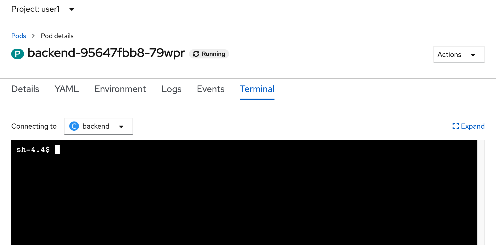
- In terminal console, test create file in container
example 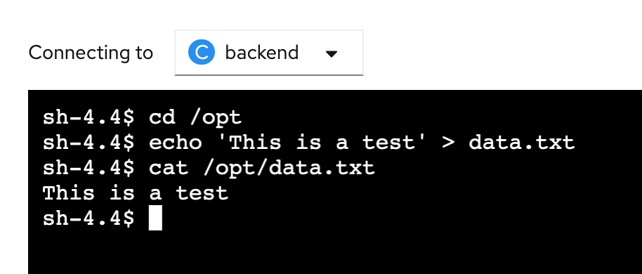cd /opt echo 'This is a test' > data.txt cat /opt/data.txt - scale down backend application to 0, back to topology, click Duke icon, in details tab of backend Deployment, click scale down to 0 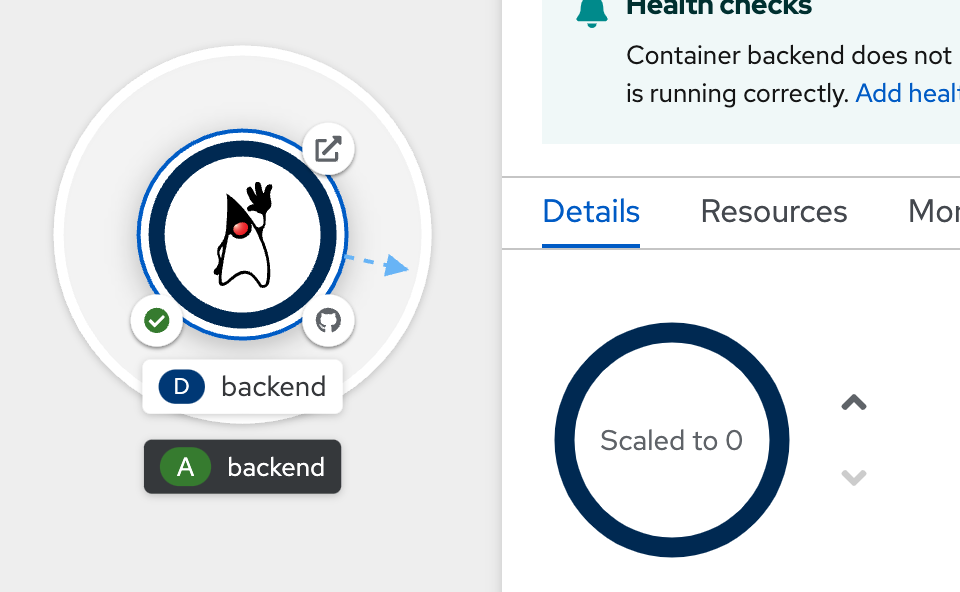 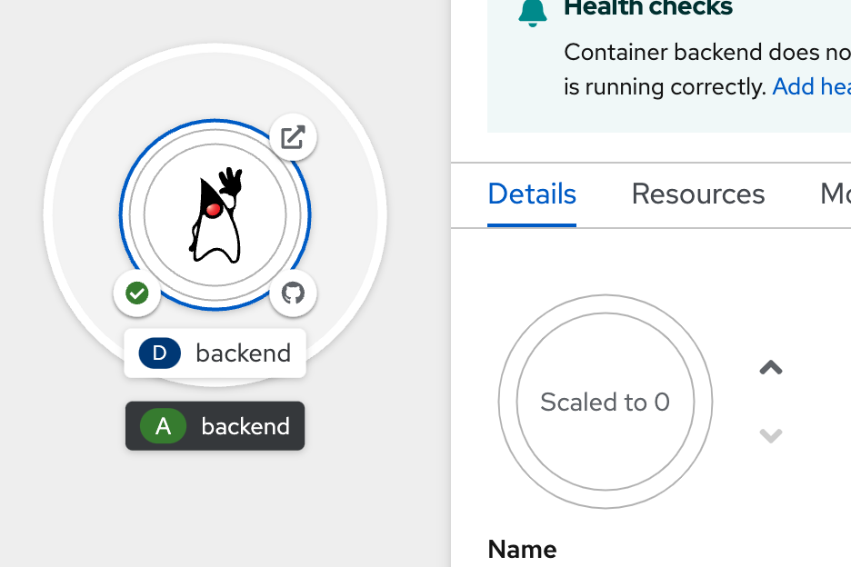
- after scale to 0 complete, scale up backend application to 1 again 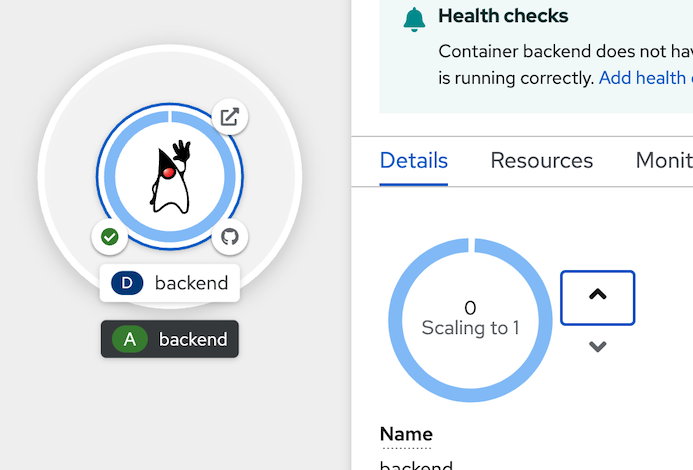 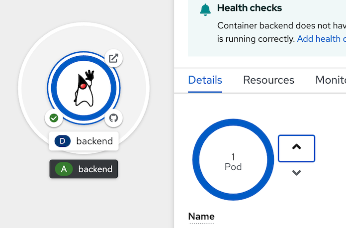
- Recheck data in container, click at resource tab in backend deployment, select pod 'backend-xxx-xxx' link in Pods section 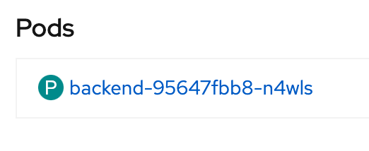
- in pod details, select terminal tabs to activate terminal console to pod
- re test with below command, data.txt not found in current container becouse we don't have persistent storage for it.
example output 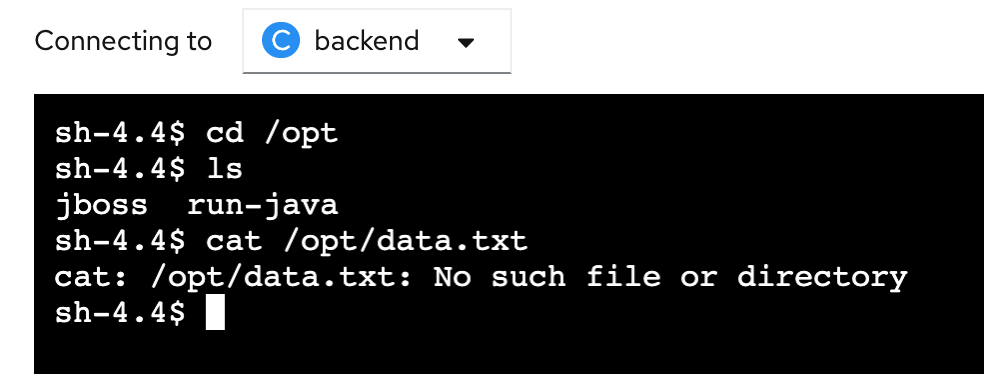cd /opt ls cat /opt/data.txt
Create Persistence Data for Container
- back to topology, click Duke icon to open backend deployment panel, select action menu dropdownlist, select add storage 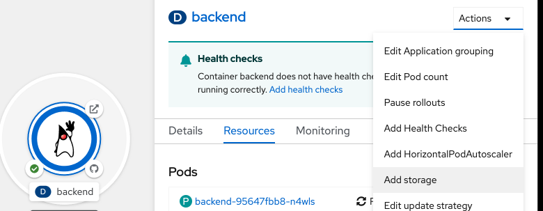
- in add storage, select
- Persistent Volume Claim: create new claim
- storage class: gp2
- Persistent Volume Claim Name: 'userx-cliam' (change userx to your user name)
- access mode: Single User(RWO)
- size: 1 GiB
- Volume Mode: Filesystem
- Mount Path: /data example result 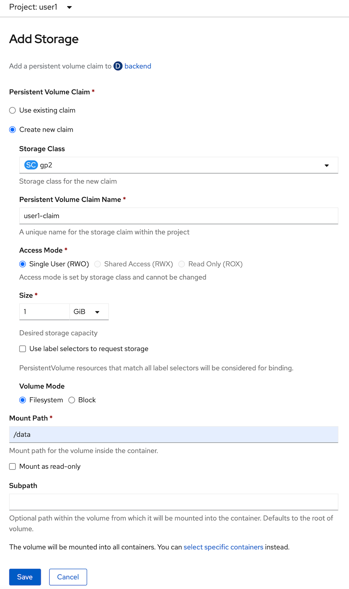
- click save and wait until backend redeploy complete 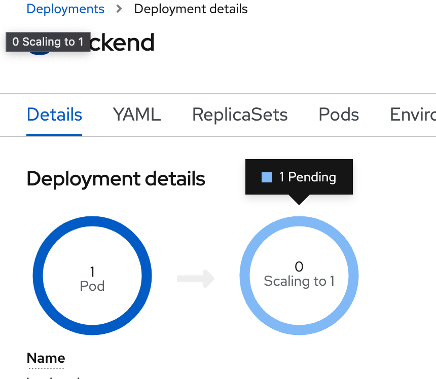 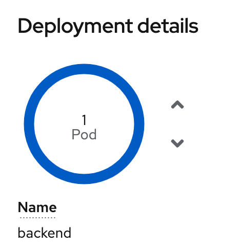
- in backend deployment, go to pods tabs, select pod name link 'backend-xxx-xxx' 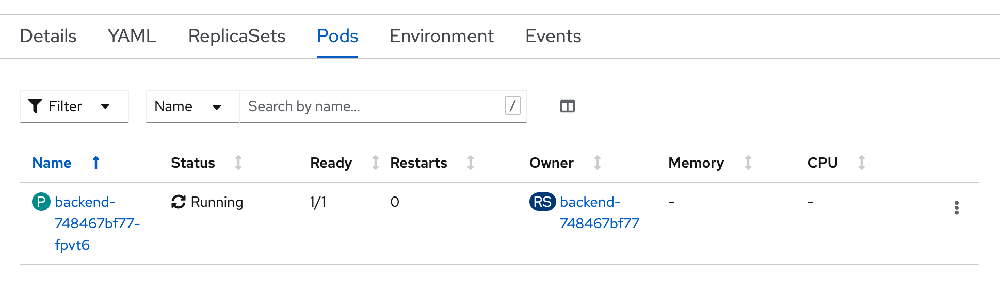
- go to terminal tab again to open terminal to container, create file again for test persistent
example output 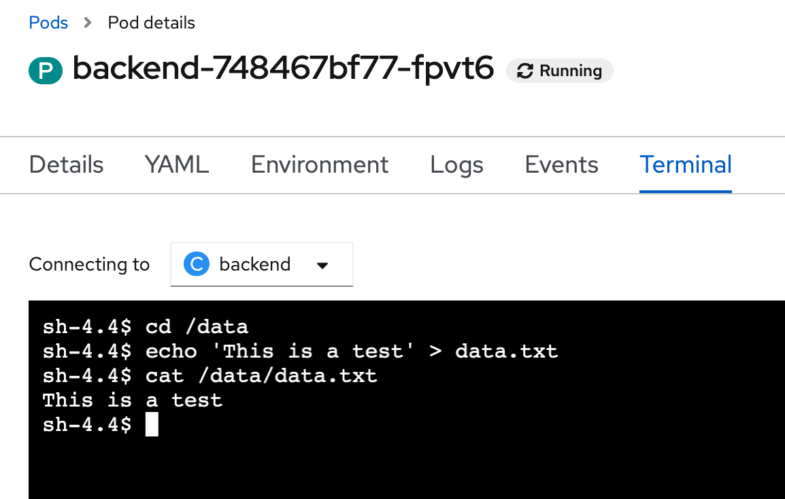cd /data echo 'This is a test' > data.txt cat /data/data.txt - bact to topology, click duke icon, in Details Tab, scale down backend deployment to 0 and scale up to 1 again (wait until scale complete before go to next step) 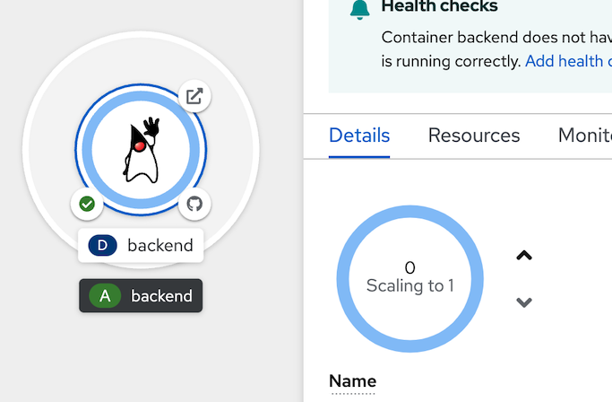
- go to pod terminal again, go to Resources Tab, click pod link 'backend-xxx-xxx' in pod section
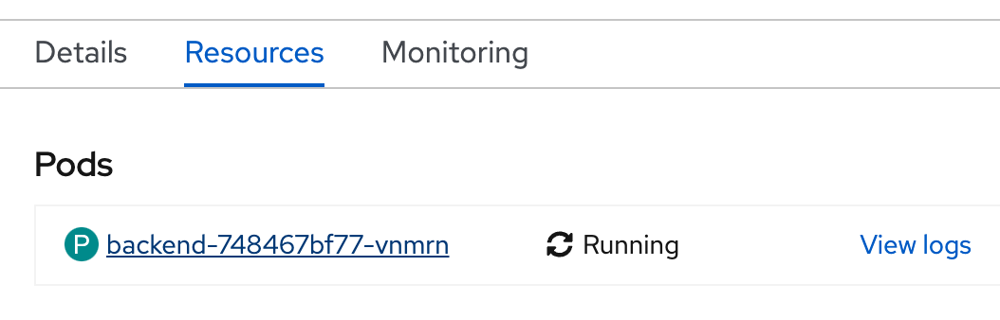 - go to terminal tab to open terminal and retest with below command
example output, you will found data.txt 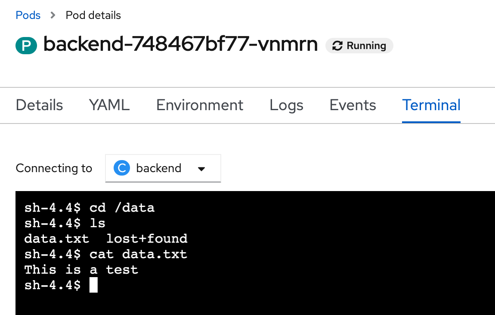cd /data ls cat data.txt